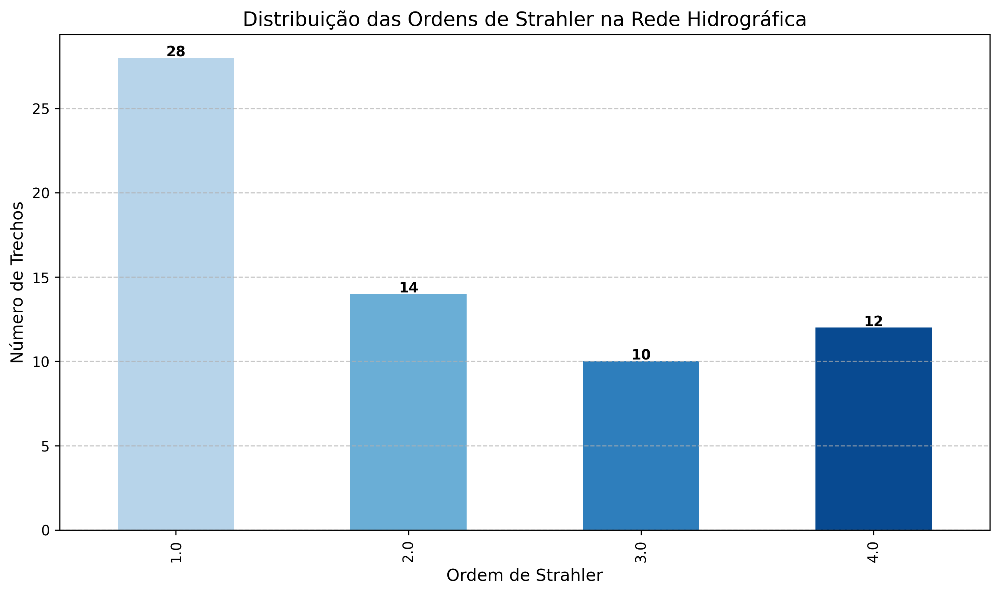

Geoprocessamento com GNN
Análises e visualizações de dados geoespaciais para a cidade de Sorocaba
Visão Geral do Projeto
Este projeto implementa análises e visualizações de dados geoespaciais para a cidade de Sorocaba, com foco em redes viárias, hidrografia, uso do solo, edificações e áreas naturais. O projeto utiliza técnicas avançadas de geoprocessamento e análise de redes para extrair insights significativos dos dados.
Hidrografia
Análise de redes hidrográficas, bacias de drenagem e sinuosidade de cursos d'água
Redes Viárias
Estudo da rede viária urbana e suas características topológicas
Edificações
Análise morfológica e de altura de edificações urbanas
Uso do Solo
Mapeamento e análise de padrões de uso e ocupação do solo
Fontes de Dados
Dados Geoespaciais
- Redes viárias (OpenStreetMap)
- Hidrografia (ANA)
- Edificações (OpenStreetMap)
- Uso do solo (MapBiomas)
- Áreas naturais protegidas
Dados Meteorológicos
- Estações INMET
- Temperatura
- Precipitação
- Umidade
- Direção e velocidade do vento
Outros Dados
- Modelo Digital de Elevação (DEM)
- Dados de licenciamento
- Estações de radiocomunicação (RBS)
Visualizações
O projeto gera diversas visualizações para análise de dados geoespaciais:
Hidrografia

Análise de Sinuosidade

Estudo da sinuosidade dos cursos d'água
Classificação de Strahler
Hierarquização dos cursos d'água pelo método de Strahler
Edificações

Análise de Altura

Distribuição de alturas das edificações
Classes de Edificações

Distribuição das classes de edificações
Uso do Solo

Mapa de Calor

Densidade espacial das classes de uso do solo
Distribuição de Áreas

Análise estatística das áreas por classe de uso
Dados Meteorológicos

Temperatura Mensal

Heatmap de temperaturas mensais
Precipitação por Estação
Análise de precipitação por estação meteorológica
Redes Viárias
Estações RBS
Visualizações Interativas
Um dos principais diferenciais deste projeto são suas visualizações interativas que permitem uma análise detalhada dos dados geoespaciais:
Mapa Interativo - Hidrografia
Esta visualização mostra a rede hidrográfica completa da região de Sorocaba, permitindo análise de conectividade, ordens de Strahler e outros atributos hidrológicos importantes.
Mapa Interativo - Edificações
Visualização das edificações urbanas com classificação por tipo e altura, permitindo análise da distribuição espacial e morfologia urbana.
Mapa Interativo - Uso do Solo
Mapa detalhado do uso e ocupação do solo, permitindo análise de padrões espaciais e fragmentação de classes de uso do solo.
Mapa Interativo - Rede Viária
Visualização interativa da rede viária urbana, com classificação por tipo de via e análise de conectividade da malha urbana.
Mapa Interativo - Estações RBS
Visualização da distribuição espacial de estações de rádio base (RBS), permitindo análise de cobertura e densidade de estações.
Rosa dos Ventos Interativa
Visualização interativa da direção e intensidade dos ventos, baseada em dados meteorológicos das estações INMET.
Recursos Interativos
- Zoom e Pan: Amplie e navegue pelos mapas interativamente
- Seleção de Camadas: Ative/desative diferentes camadas de informação
- Popups Informativos: Clique em elementos para ver detalhes
- Filtros: Em alguns mapas, filtre por atributos específicos
- Tela Cheia: Expanda para visualização em tela cheia
Todas estas visualizações foram criadas usando bibliotecas Python como Folium e Plotly, que convertem dados geoespaciais em mapas web interativos.
Estrutura do Projeto
geoprocessing_gnn/ ├── data/ │ ├── interim/ # Dados intermediários │ ├── processed/ # Dados processados │ └── raw/ # Dados brutos ├── src/ │ ├── preprocessing/ # Scripts de pré-processamento │ │ ├── buildings.py │ │ ├── hidrografia.py │ │ ├── inmet.py │ │ ├── land_use.py │ │ ├── nature.py │ │ └── roads.py │ ├── visualization/ # Scripts de visualização │ ├── analysis/ # Scripts de análise │ ├── graph/ # Implementações de GNN │ └── enriched_data/ # Enriquecimento de dados ├── outputs/ │ ├── figures/ # Figuras e gráficos │ ├── models/ # Modelos treinados │ ├── reports/ # Relatórios gerados │ └── visualizations/ # Visualizações por categoria │ ├── buildings/ │ ├── hidrografia/ │ ├── inmet/ │ ├── landuse/ │ ├── natural_areas/ │ ├── rbs/ │ └── roads/ └── analysis_reports/ # Relatórios de análise de qualidade
Fluxo de Trabalho

O fluxo de trabalho implementado no projeto segue as seguintes etapas:
- Aquisição de Dados: Coleta de dados de diversas fontes geoespaciais
- Pré-processamento: Limpeza, validação e padronização
- Análise Exploratória: Estatísticas e visualizações básicas
- Análise Espacial: Operações geoespaciais avançadas
- Modelagem de Redes: Construção e análise de grafos espaciais
- Visualização: Mapas interativos e estáticos
- Geração de Relatórios: Documentação dos resultados
Metodologias e Técnicas
Análise de Qualidade de Dados
Técnicas robustas para verificação da integridade, completude e precisão dos dados geoespaciais:
- Validação topológica de geometrias
- Detecção de valores ausentes e outliers
- Verificação de consistência de atributos
- Relatórios automatizados de qualidade
Análise de Redes
Modelagem e análise de redes complexas usando grafos:
- Construção de grafos a partir de dados lineares
- Cálculo de métricas topológicas (centralidade, betweenness)
- Detecção de comunidades
- Análise de conectividade
Aprendizado de Máquina Geoespacial
Aplicação de técnicas de aprendizado de máquina para dados geoespaciais:
- Redes Neurais de Grafos (GNN)
- Clusterização espacial
- Detecção de padrões
- Previsão de atributos espaciais
Visualização Avançada
Técnicas modernas de visualização geoespacial:
- Mapas interativos com Folium
- Mapas de calor e densidade
- Visualizações 3D
- Gráficos estatísticos interativos
Tecnologias Utilizadas
Python
Linguagem principal do projeto
GeoPandas
Manipulação de dados geoespaciais
NetworkX
Análise de redes e grafos
Folium
Visualização interativa
Matplotlib
Visualização estatística
Seaborn
Visualização estatística avançada
Rasterio
Processamento de dados raster
Shapely
Manipulação de geometrias
Requisitos
geopandas>=0.13.2 pandas>=2.0.3 numpy>=1.24.3 matplotlib>=3.7.1 seaborn>=0.12.2 folium>=0.14.0 networkx>=3.1 shapely>=2.0.1 rasterio>=1.3.8 fiona>=1.9.4 pyproj>=3.6.0 contextily>=1.3.0 scikit-learn>=1.3.0 tqdm>=4.65.0 jupyter>=1.0.0 notebook>=7.0.3
Uso do Projeto
Configuração do Ambiente
# Clone o repositório: git clone https://github.com/D0mP3dr0/geoprocessing_gnn.git cd geoprocessing_gnn # Crie um ambiente virtual: python -m venv venv source venv/bin/activate # Linux/Mac venv\Scripts\activate # Windows # Instale as dependências: pip install -r requirements.txt
Execução dos Módulos
# Executar o fluxo de trabalho completo: python run_workflow.py # Executar análise de dados: python data_analysis.py # Exemplos específicos de visualização de dados: python src/visualization/visualize_roads.py python src/visualization/visualize_hidrografia.py python src/visualization/visualize_buildings.py python src/visualization/visualize_land_use.py python src/visualization/visualize_inmet.py python src/visualization/visualize_nature.py # Exemplos de processamento de dados: python src/preprocessing/roads.py python src/preprocessing/hidrografia.py python src/preprocessing/buildings.py python src/preprocessing/inmet.py python src/preprocessing/land_use.py python src/preprocessing/nature.py